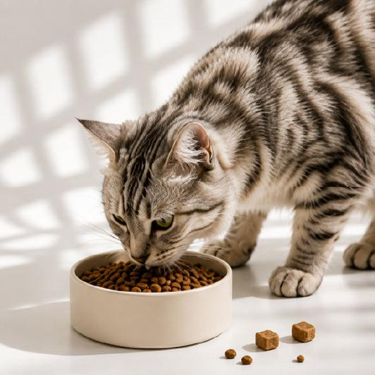
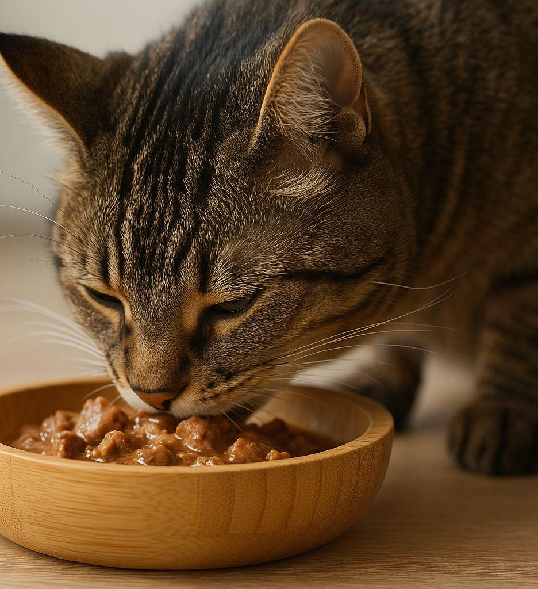
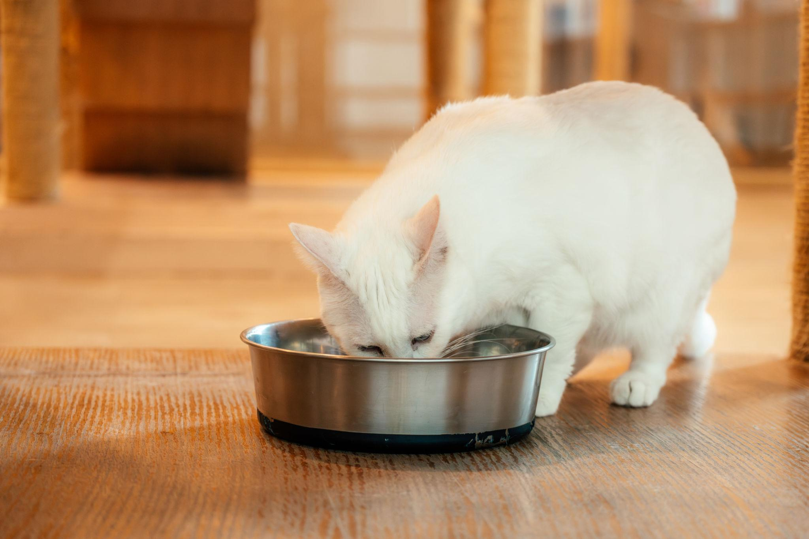

Kediler etçil hayvanlardır ve sağlıklı yaşamaları için hayvansal protein içeren dengeli bir beslenmeye ihtiyaç duyarlar. Yaşlarına ve sağlık durumlarına uygun kedi mamaları tercih edilmelidir. Temiz suya her zaman erişebilmeleri önemlidir. Çikolata, soğan ve sarımsak gibi bazı insan yiyecekleri kediler için zararlı olabilir.